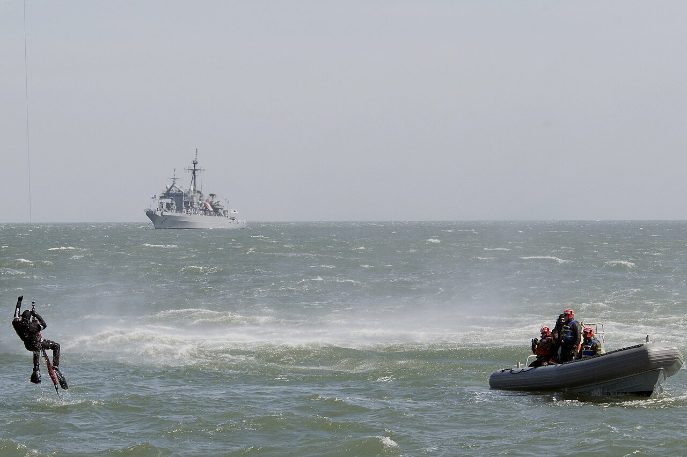
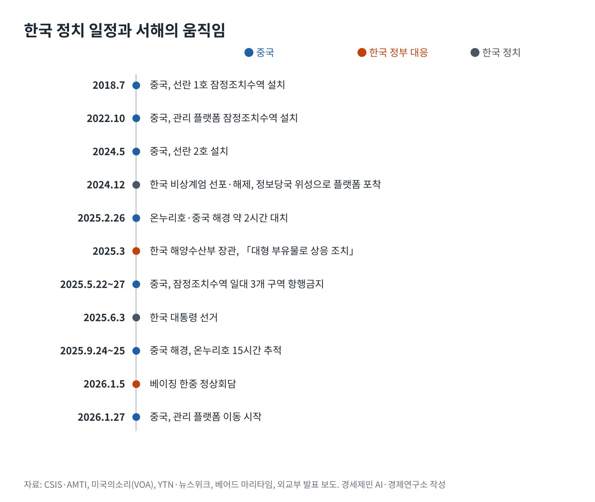

[서해평화 가능한가③] 권력 공백기 노린 중국과 북한의 서해 전략
구조물은 2018·2022·2024년에 이미 설치, 정치 전환기에는 대치와 항행금지가 겹쳐
미국 연구자들도 「공백 활용」과 「우연의 일치」로 해석 갈려
북중 1962년 국경조약에 기댄 동경 124도선, 남북 경계와 한중 경계가 만나는 곳
한국이 2024년 12월 비상계엄 선포에서 2025년 6월 3일 대통령 선거까지 정치 전환기를 지나는 동안 서해도 시끄러웠다. 중국 구조물을 조사하던 한국 배가 막혔고, 중국은 잠정조치수역 일대에 항행금지구역을 정했다.
이 시기를 두고 중국과 북한이 한국의 공백을 노렸다는 해석이 나왔다. 해석이 맞는지는 날짜로 따져볼 수 있다. 구조물이 언제 놓였고, 대치가 언제 일어났고, 외교가 언제 움직였는지를 한 줄에 세우면 그림이 달라진다.
결론부터 말하면 구조물은 공백기 전에 이미 바다에 있었다. 공백기에 드러난 것은 설치가 아니라 존재감을 과시하는 행동이었다. 북한의 서해 셈법은 그보다 훨씬 오래된 문제다.
1. 구조물은 공백기 전에 놓였다
미국 전략국제문제연구소(CSIS)와 아시아해양투명성이니셔티브(AMTI)의 연표부터 본다. 선란 1호는 2018년 7월, 관리 플랫폼 애틀랜틱 암스테르담은 2022년 10월 잠정조치수역에 들어섰다. 선란 2호는 2024년 5월 자리 잡았다.

해사신문과 아산정책연구원도 선란 1호 2018년, 선란 2호 2024년, 관리 시설 2022년이라는 같은 시점을 전했다. 세 시설 모두 한국 정치 전환기보다 먼저 바다에 놓였다.
공백기에 달라진 것은 한국의 인지다. 미국의소리(VOA)는 2025년 1월 한국 정보당국이 전달 위성으로 대형 철골 구조물을 포착했다고 조선일보를 인용해 전했다. CSIS 연표상 2022년부터 있던 플랫폼이 뒤늦게 공론화됐다.

2. 공백기에 겹친 대치와 항행금지
현장의 행동은 공백기와 겹친다. 2025년 2월 26일 한국 해양조사선 온누리호가 구조물 조사에 나섰다가 중국 해경과 민간 고무보트에 막혀 약 2시간 대치했다. 아산정책연구원과 코리아중앙데일리가 같은 경위를 전했다.
중국 롄윈강 해사국은 2025년 5월 22일부터 27일까지 서해 3개 구역에 배의 출입을 막았다. YTN이 인용한 미국 뉴스위크 분석을 보면 대부분이 잠정조치수역 안이었고, 1곳은 한국 배타적경제수역(EEZ) 안이었다. 대통령 선거를 열이틀 앞둔 때다.
한국 정부도 대응했다. 강도형 당시 해양수산부 장관은 2025년 3월 국회에서 대형 부유물로 상응 조치를 했다고 밝혔다. 4월 21일에는 어떤 시설이 필요한지 정해야 한다며 외교 경로로 강하게 항의하고 있다고 말했다.
3. 「공백을 노렸다」, 미국 연구자들도 갈려
VOA가 2025년 1월 모은 미국 연구자들의 해석은 갈린다. 아시아태평양전략센터의 데이비드 맥스웰은 중국이 한국의 정치 혼란을 틈타 EEZ 안에서 활동한다고 봤다. 일부 분석가는 둘의 연관을 확신하지 않았다.
브루킹스연구소의 앤드루 여는 중국이 한국의 정치적 의지를 시험하고 있을 수 있다고 했다. 위스콘신대 매디슨캠퍼스의 테런스 로릭은 회색지대 전략의 목표가 상대가 새 일상을 받아들이게 하는 데 있다고 설명했다.
날짜로 보면 두 해석이 함께 성립한다. 설치는 오래전 계획에 따랐다. 하지만 대치와 항행금지 같은 존재 과시는 한국의 대응 여력이 약한 때와 겹쳤다. 회색지대 전략은 상대의 빈틈을 기다리지 않고 빈틈이 생기면 키운다.
4. 북한의 서해, 북방한계선을 둘러싼 오랜 셈법
북한의 서해 문제는 정치 전환기보다 훨씬 오래됐다. 북한은 1973년 군사정전위원회 제346차 회의에서 북방한계선(NLL) 문제를 제기했다. 1999년 9월에는 더 남쪽에 「조선 서해 해상 군사분계선」을 주장했다.
이 바다에서 1999년과 2002년 연평해전, 2009년 대청해전이 났다. 2010년에는 천안함이 침몰해 46명이 숨졌고, 북한의 연평도 포격으로 한국인 4명이 숨졌다. NLL은 남북 무력 충돌이 가장 잦았던 선이다.
김정은 국무위원장은 2024년 2월 NLL을 두고 더 강경한 군사 태세를 언급했다고 AP통신이 전했다. 북한에게 서해는 어장과 해상 통로가 걸린 바다다. 중국 구조물보다 먼저, 더 직접 이 바다를 흔들어 온 당사자다.
5. 북중 국경조약과 동경 124도선
중국과 북한의 선은 서해에서 한 번 만난다. 코리아중앙데일리와 독일 프리드리히 나우만 재단은 중국이 1962년 북한과 맺은 국경조약을 근거로 동경 124도선을 해양 경계로 주장한다고 전했다.
이 선은 한국이 자국 EEZ로 보는 수역을 파고든다. 북중 사이 국경조약이 한중 해양경계 협상의 근거로 쓰이는 셈이다. 남북 경계와 한중 경계가 따로 놀지 않는 이유다. 한국은 두 협상을 함께 셈해야 한다.
다만 서해에서 중국과 북한이 손발을 맞춘다는 공개 증거는 확인되지 않는다. 두 나라는 각자의 선을 각자의 셈법으로 밀고 있다. 한국이 두 문제를 묶어 보되 따로 대응해야 하는 이유다.
6. 공백 뒤의 외교
새 정부 출범 뒤 외교가 움직였다. 이재명 대통령과 시진핑 국가주석은 2026년 1월 5일 베이징에서 만났다. 27일 중국은 관리 플랫폼을 잠정조치수역 밖으로 옮기기 시작했고, 한국 외교부는 「의미 있는 진전」이라고 평가했다.
중국 외교부는 이전이 기업의 자체 결정이며 양식 시설에 대한 입장은 그대로라고 밝혔다. 9월 21일 톈진 해양협력대화에서도 중국은 순수 양식시설이라는 입장을 되풀이했다. 남은 양식장 2기는 그대로다.
공백기를 노린 기습이었느냐보다 중요한 것은 공백이 없을 때의 대응이다. 구조물은 한 정부의 임기를 넘어 놓였다. 대응도 정권의 교체를 넘어 이어져야 한다. 서해 정책이 정치 일정에 흔들리지 않을 때 빈틈도 줄어든다.
참고문헌
기관 자료
- Ministry of Foreign Affairs of the People's Republic of China, "Foreign Ministry Spokesperson Guo Jiakun's Regular Press Conference on April 21, 2025", 2025년 4월 21일. https://www.mfa.gov.cn/mfa_eng/xw/fyrbt/202504/t20250421_11600794.html
- Korea.net, "China moves structure in Yellow Sea border row with Korea", 2026년 1월 28일. https://www.korea.net/NewsFocus/policies/view?articleId=286552
연구 논문과 보고서
- 심상민, 「중국 서해 구조물 설치의 국제법적 검토」, 아산정책연구원 이슈브리프 2025-13, 2025년 4월 30일. https://www.asaninst.org/wp-content/themes/twentythirteen/action/dl.php?id=99052
- Jennifer Jun·Victor Cha(CSIS·AMTI), "Chinese Platforms in the Yellow Sea's South Korea-China PMZ", Beyond Parallel, 2025년 6월 23일. https://beyondparallel.csis.org/chinese-platforms-in-the-yellow-seas-south-korea-china-pmz/
- Jennifer Jun·Victor Cha(CSIS·AMTI), "China Begins Relocating Structure from PMZ", Beyond Parallel, 2026년 1월 28일. https://beyondparallel.csis.org/china-begins-relocating-structure-from-pmz/
- Jennifer Jun·Victor Cha(CSIS·AMTI), "China Relocates PMZ Structure to Weihai Shipyard", Beyond Parallel, 2026년 2월 2일. https://beyondparallel.csis.org/china-relocates-pmz-structure-to-weihai-shipyard/
- Wikipedia, "Northern Limit Line"(Roehrig 2011, Elferink 1994, KCNA 1999, AP 2024년 2월 15일 인용). https://en.wikipedia.org/wiki/Northern_Limit_Line
언론 보도
- Christy Lee, "Analysts: China normalizing its claims to maritime zone shared with South Korea", Voice of America(GlobalSecurity 전재), 2025년 1월 23일. https://www.globalsecurity.org/military/library/news/2025/01/mil-250123-voa02.htm
- Baird Maritime, "South Korea sets up floating survey platform to monitor Chinese presence", 2025년 3월 27일. https://www.bairdmaritime.com/security/non-naval-security/south-korea-sets-up-floating-survey-platform-to-monitor-chinese-presence
- Taejun Kang, "South Korea eyes Yellow Sea countermeasure to Chinese structure in disputed waters", Radio Free Asia, 2025년 4월 22일. https://rfa.org/english/china/2025/04/22/china-south-korea-yellow-sea-structure/
- Korea JoongAng Daily, 한중 서해 철골 구조물 분쟁 해설 기사(지면 2025년 4월 30일). https://www.koreajoongangdaily.com/korea/10514945
- Frederic Spohr, "China Expands in the Yellow Sea", Friedrich Naumann Foundation for Freedom, 2025년 5월 13일. https://www.freiheit.org/north-and-south-korea/china-expands-yellow-sea
- YTN, 중국 서해 항행금지구역 설정 보도(뉴스위크 분석 인용), 2025년 5월 23일. https://www.ytn.co.kr/_ln/0134_202505231654362807
- 연합뉴스, "S. Korea seeks progress in talks with China on maritime demarcation, steel structures", The Korea Herald, 2026년 1월 7일. https://www.koreaherald.com/article/10650354
- 해사신문, "한중, 서해 구조물 다시 테이블에…中 '순수 양식시설' 되풀이", 2026년 9월 22일. http://www.haesanews.com/news/articleView.html?idxno=151332
- 김혜영, "S. Korea Conveys Concern to China over Yellow Sea Structures; Beijing Claims 'Purely Aquaculture Facilities'", SBS, 2026년 9월 22일. https://news.sbs.co.kr/english/article.do?news_id=N1008766309
[사진 출처]
- [사진1] Petty Officer 2nd Class Byron C. Linder, "Yellow Sea activity DVIDS266875.jpg", 위키미디어 공용, 퍼블릭 도메인. https://commons.wikimedia.org/wiki/File:Yellow_Sea_activity_DVIDS266875.jpg
※ 이 기사는 AI 프로그램 클로드를 활용해 작성했습니다.
관련기사
- [서해평화 가능한가①] 중국의 서해 구조물이 노리는 서해 지도
- [서해평화 가능한가②] 모순의 바다, 법적 지위가 충돌하는 서해
- [서해평화 가능한가④] 중국의 속내, 서해를 내해로
- [서해평화 가능한가⑤] 북한의 계산, 생존에서 협상력까지
저작권자 © AI경세제민 무단전재 및 재배포, AI학습 및 활용 금지